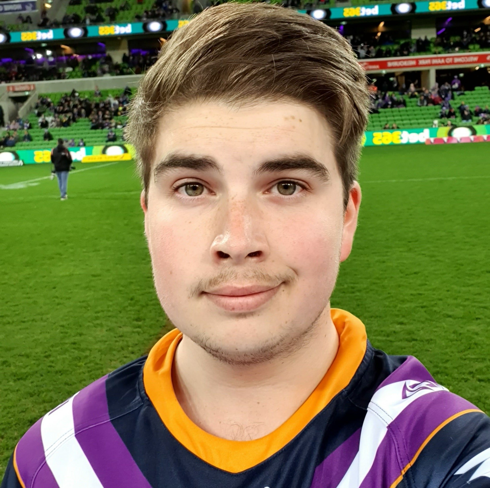

Upon completion of Year 12 in Toowoomba excelling in building and hands-on classes . I successfully completeing RAAF Fitter training –The Airforce then welcomed me into 1 Squadron for six years which is a part of the 82nd Wing located in Amberley Queensland. My primary assignment was F111C/G Aircraft maintenance while also participating in deployment exercises around Australia. My venture with the Airforce left me yearning for normality in life so I resigned and returned to Toowoomba . Once returning home I started an apprenticeship in diesel fitting for the Toowoomba Regional council. Daily black oil showers left me quite unenthused. My mechanical hands then saw use in Hervey Bay, building my parents retirement home overlooking the sea and Fraser Island.Having finished building and in need of a change of pace I started working as a road traffic controller dealing with the public and road construction crews, which I enjoyed for over 6 years until COVID reared its head. This gave me the perfect opportunity to enrol in an IT degree with RMIT. .
Interest in IT
I have always been an avid gamer, starting out on my DOS-based Amstrad computer. This led me to learn the ins and outs of the command prompt in order to troubleshoot games that didn't work. It would be amazing to learn how to write games/code software. I think it's great how computers are still constantly evolving after all this time. Nowadays I am mainly gaming on PC but occasionally on consoles as well. I also have a cat called Misty that loves to sit on my PC and supervise everything I do.
Sports wise - I'm into cycling, gym, and tennis. There is nothing wrong with a date night indoors on a Friday night enjoying some pizza and ice cream watching some Sci-fi on TV creating that much needed inner world to explore while enjoying time with loved ones. Education-wise - I studied a Certificate III in Web applications & Information technology after not finishing secondary school. I chose adventure and life over school. During this time - I breezed through this learning new things - such as Flash, Dreamweaver, Office applications. I achieved high distinctions making a few silly mistakes lowering some scores, and I enjoyed studying. A few interesting things about me ; I am known to adopt some fairly quirky ideas when solving problems. At work, sometimes we get crates of IT Equipment that needed to get delivered around the site. My Plan to save a chunk of time was to get a crane stuck into the containers and lift them from the basement to the turbine floor. Everyone thought I was insane for coming up with this idea, but they all agreed that if you wanted it done quickly, this would be the way to do it. I'm usually the one to come up with quirky or untraditional ways to complete tasks and I thrive from this. I am somewhat like a crazy Macgyver when it comes to ideas.
Interest in IT Started when I received an IBM XT 10.77 Mhz Clone with a 40MB Hard disk and 2 360K floppy disks with only CGA graphics. I had that machine all the way up to the replacement PC that came after it - my Pentium 75 with windows 95. Ever since then I've been known to sit in front of a computer for large amounts of time just learning everything I can, just fascinated by computers. I want to learn programming/design/ virtualisation/servers and everything I can!

Declan
Heya! I'm Declan Student ID: S3868255 Email S3868255@student.rmit.edu.au Web Site https://quantumelon.github.io/S3868255/ ! I'm 22 years old and I am deeply passionate about the field of Information Technology and how it can help make everyone's lives better and safer! My interests stemmed from my time in High School where I did amateur programming in my spare time and eventually, I moved from the software portion of IT to the hardware portion, beginning to build computers for my friends and I. I’m currently my bachelor's degree at RMIT in the same field and I’m hoping to use the skills that I learn to start a prosperous career in IT and begin progressing towards my ideal role as a Cyber Crime Analyst for the Australian Federal Police. For as long as I can remember I’ve always been drawn to helping and protecting people and that’s why I know I’ll be right at home at the AFP helping make peoples lives better!
Interest in IT
Started with my dabbling in amateur programming in the form of .bat file programs, trying to write up programs that create hidden lockable folders that can only be revealed with the right code. I want to learn aspects of the IT industry to learn how to protect others from online criminals! As above, I also have an interest in building computers. In my spare time I have messed around with HTML/CSS coding, and even tried to get VMWare to emulate MacOS X!
I am a caucasian female from Melbourne Victoria, and I am at least 4th generation Australian. I completed Year 12 (VCE) in 2015 and then went onto study an Advanced Diploma of Professional Games Development (Design Stream) graduating in 2017. I have subsequently been working for the last two and a half years while I find where I want to take my life and career. My primary language is English and is the only one I can fluently speak, and I also know a little French and Japanese. I am also currently learning Mandarin. I am an Indie game developer working in a small team to create a mobile puzzle game. My passion for IT has originated from playing video games. It first started from modding games such as Minecraft, building my systems and then moving to make my games on Game Maker. It wasn't until I was finishing year 12 that I realised that information technology was something that I wanted to pursue a little more, it wasn't until the start of this year that I decided that I wanted to pursue it as a career.
Interest in IT
My passion for IT has originated from playing video games. It first started from modding games such as Minecraft, building my systems and then moving to make my games on Game Maker. It wasn't until I was finishing year 12 that I realised that information technology was something that I wanted to pursue a little more, it wasn't until the start of this year that I decided that I wanted to pursue it as a career
Miller
Hi, I'm Miller! Student ID: S3866656 Email: millerblair996@gmail.com Web Site https://milpz96.github.io/IntrotoIT-Assignment01/ My tastes in music passionately varied between heavy metal, rap and everything else. I actively participated in Football (AFL) growing up - but now I prefer to watch it live or at the stadium. I have a culturally diverse background, with mixtures of British, Scottish, Italian, German and Malaysian. My adorable cat Poe is named after "The Thinker" statue, rather than initially desiring "The Poet" as it's daily calling. Poe would strategize waiting for the most convenient time to strike when his siblings would be play fighting, and this is how the name Poe "The Thinker" arose. The schools I attended were PBC (gold coast) for 3 years and Rosebud Secondary College (VIC) for 2 years, one day I want to move back to VIC. I currently work in a Telstra retail store, been at the shop for almost 4 years and trying to find a job more in the field of work i want. I play a lot of computer games and use to play CoD competitively and CS:GO, now I casually play games like League of Legends, Valorant, Escape from Tarkov, Minecraft, Halo, Borderlands 3.
Interest in IT
Stems from wanting to produce video games which involve s learning how to create resources/code and generally just find my way through the industry by learning everything I possibly can around it.I play a lot of computer games and use to play CoD competitively and CS:GO, now I casually play games like League of Legends, Valorant, Escape from Tarkov, Minecraft, Halo, Borderlands 3.
Hi, I'm Misty I was born on a farm near a small town called Childers, it's about an hour away from Hervey Bay. I then moved to Hervey Bay itself when I was still quite young, where I was homeschooled. Although I passed my homeschooling, I didn't enjoy my education too much as I was easily distracted. I can be quite shy at first but once I get to know you I will open up and start to enjoy your company. I enjoy watching the occasional movie and am an avid birdwatcher. I also like to keep fit by running although I'm more of a sprinter than a long-distance runner, and don't mind running late at night as I have good night vision. I have an erratic sleeping pattern so I can usually be found ON the computer during the day or late at night - much to my roommate's displeasure. An interesting fact about me is that I am the youngest and also the shortest member of our group. .
Interest in IT
I became interested in IT when I discovered the fact that computers and electronic devices tend to give off large amounts of heat, on chilly mornings I use this fact to my advantage and am therefore quite often found working on the computer . I learned how to warm up to servers to ensure cables were connected. And getting to know how to type fairly quickly using my paws. One Day I hope to be a supawvisor for a large team as I'm sure they will all just adore me in their team!